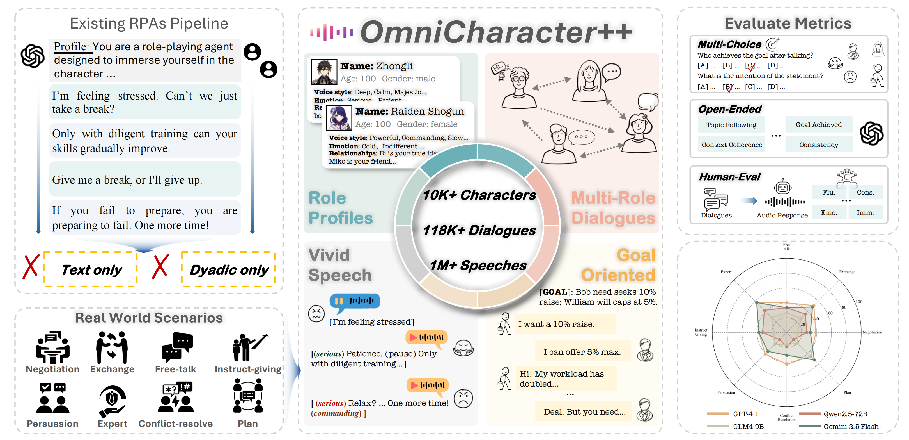
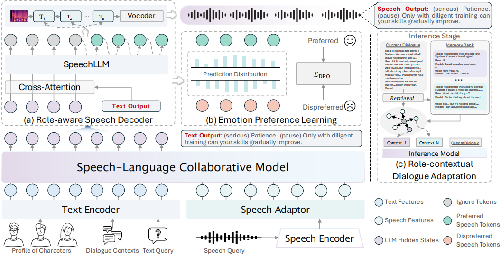

Performance comparison with state-of-the-art models on the OmniCharacter++ test set of multi-party dialogue. Models are evaluated with multi-choice QA and Circular Evaluation Strategy for robust context understanding. Neg.: negotiation, Exc.: exchange, Free.: free-talk, Exp.: expert-domain, Inst.: instruction-giving, Per.: persuasion, Conf.: conflict-resolution, Pla.: planning. The number in parentheses indicates the rank.
| Models | Avg. | Multi-party Dialogue - Context Understanding (Multi-Choice) | |||||||
|---|---|---|---|---|---|---|---|---|---|
| Neg. | Exc. | Free. | Exp. | Inst. | Per. | Conf. | Pla. | ||
| Human Evaluation | |||||||||
| Human | 89.84 (-) | 88.66±1.0 | 90.88±1.1 | 91.11±1.0 | 92.77±1.0 | 89.88±1.2 | 87.44±1.1 | 85.88±0.7 | 92.11±1.1 |
| Blind Evaluation (w/o dialogue context) | |||||||||
| Random Choice | 23.14 (-) | 24.02±1.1 | 23.88±1.2 | 18.44 | 27.77±1.0 | 22.66±1.4 | 20.11±1.2 | 24.66±1.0 | 23.55±1.3 |
| Random Choice (circular eval.) | 0.00 (-) | 0.00 | 0.00 | 0.00 | 0.00 | 0.00 | 0.00 | 0.00 | 0.00 |
| GPT-3.5-Turbo | 21.51 (-) | 18.44±1.1 | 23.77±1.0 | 25.88±1.2 | 18.55±1.1 | 26.11±1.3 | 27.66±1.1 | 11.22±1.1 | 20.44±1.0 |
| GPT-4o | 24.68 (-) | 21.11±0.9 | 30.02±1.2 | 30.44±0.7 | 16.22±1.1 | 24.88±1.0 | 41.77±1.0 | 17.11±1.0 | 15.88±1.2 |
| Proprietary Models | |||||||||
| GPT-4.1 | 50.11 (1) | 37.44±1.2 | 54.22±1.0 | 69.11±1.3 | 67.88±1.1 | 42.11±1.4 | 46.77±1.2 | 41.11±1.3 | 42.22±0.9 |
| GPT-4.1-mini | 40.55 (5) | 29.44±1.2 | 38.11±1.2 | 57.44±1.1 | 50.88±1.2 | 40.11±1.1 | 34.11±1.1 | 34.22±1.0 | 40.11±1.2 |
| GPT-4o | 45.20 (4) | 39.11±1.1 | 52.22±1.2 | 66.88±1.3 | 50.88±1.3 | 31.77±1.3 | 43.77±1.0 | 38.77±1.0 | 38.22±1.1 |
| GPT-4o-mini | 32.12 (7) | 21.11±1.2 | 33.77±1.2 | 50.11±1.0 | 46.77±1.3 | 30.11±1.3 | 31.88±1.0 | 24.11±1.0 | 19.11±1.1 |
| GPT-3.5-Turbo | 22.90 (8) | 23.88±1.2 | 18.44±1.0 | 27.11±0.9 | 22.88±0.9 | 20.11±1.0 | 23.88±1.3 | 24.11±1.2 | 22.77±1.0 |
| DeepSeek-V3 | 39.94 (6) | 33.77±0.9 | 43.88±1.3 | 57.44±0.6 | 46.77±1.1 | 38.77±1.0 | 36.22±0.9 | 28.44±1.2 | 34.22±1.1 |
| Doubao-1.5-Pro-32K | 47.66 (3) | 37.44±0.4 | 47.88±1.1 | 50.11±1.0 | 52.88±1.2 | 56.11±1.1 | 46.22±1.3 | 43.88±1.2 | 46.77±0.9 |
| Gemini-2.0-flash-preview | 48.36 (2) | 42.77±1.1 | 52.22±1.3 | 66.88±1.1 | 46.77±0.9 | 48.88±1.0 | 48.11±1.4 | 41.11±1.2 | 40.11±0.7 |
| Open-source Models | |||||||||
| LLaMA-3.1-405B-Instruct | 39.75 (2) | 34.77±1.3 | 38.88±1.4 | 39.22±1.2 | 41.88±1.2 | 39.11±0.9 | 41.11±1.3 | 40.88±1.1 | 42.11±1.0 |
| LLaMA-3.1-70B-Instruct | 36.21 (5) | 34.77±1.0 | 39.11±1.0 | 36.11±1.1 | 35.11±1.2 | 39.11±1.2 | 35.22±1.1 | 38.11±1.0 | 32.11±1.2 |
| LLaMA-3.1-8B-Instruct | 22.94 (7) | 25.11±1.1 | 19.11±0.9 | 20.11±1.2 | 12.11±1.2 | 31.77±1.1 | 25.11±1.0 | 28.11±0.8 | 22.11±1.3 |
| Qwen2.5-72B-Instruct | 43.59 (1) | 34.88±1.0 | 36.77±0.9 | 54.11±0.8 | 59.11±1.1 | 49.11±1.2 | 36.88±1.2 | 41.11±1.0 | 36.77±1.3 |
| Qwen2.5-32B-Instruct | 38.49 (3) | 30.11±1.0 | 39.11±0.8 | 54.11±1.1 | 48.11±1.0 | 36.11±1.0 | 45.11±1.0 | 27.11±1.0 | 28.11±1.2 |
| Qwen2.5-14B-Instruct | 36.91 (4) | 25.11±1.2 | 26.77±1.3 | 57.11±0.9 | 52.11±0.6 | 35.11±1.2 | 30.88±1.0 | 34.11±1.3 | 34.11±1.2 |
| Qwen2.5-7B-Instruct | 23.33 (6) | 19.11±1.0 | 21.11±0.7 | 35.11±1.1 | 32.88±1.1 | 14.11±1.0 | 27.11±1.0 | 21.11±1.2 | 16.11±1.2 |
| Reasoning Models | |||||||||
| o4-mini | 38.91 (4) | 34.88±1.1 | 40.11±1.1 | 49.11±1.2 | 48.11±1.0 | 36.11±1.1 | 39.11±0.8 | 27.11±1.0 | 36.77±1.0 |
| o3-mini | 41.15 (3) | 37.44±1.2 | 44.11±1.1 | 54.11±1.2 | 48.11±1.4 | 36.11±1.2 | 39.11±1.2 | 30.11±1.2 | 40.11±1.2 |
| o1-mini | 35.82 (5) | 30.11±1.0 | 36.77±1.0 | 42.11±1.1 | 48.11±1.1 | 36.11±1.2 | 37.11±1.0 | 29.11±1.2 | 27.11±1.4 |
| Gemini-2.5-flash | 42.33 (2) | 34.77±1.0 | 34.77±0.7 | 43.11±1.2 | 49.11±1.1 | 37.11±1.2 | 45.11±1.2 | 46.77±1.3 | 47.88±0.8 |
| Gemini-2.5-pro-preview-05-06 | 45.62 (1) | 40.11±0.8 | 40.11±1.1 | 52.11±1.0 | 54.11±1.2 | 41.11±1.1 | 45.88±1.3 | 46.77±1.1 | 44.77±1.0 |
| Role-playing Models | |||||||||
| CharacterGLM | 36.47 (6) | 34.77±1.0 | 35.11±1.1 | 60.88±1.1 | 42.77±0.8 | 20.11±0.9 | 39.11±0.9 | 32.88±1.2 | 26.11±1.1 |
| Baichuan-NPC | 36.23 (7) | 29.88±1.0 | 38.77±1.1 | 49.11±1.1 | 42.77±1.0 | 31.77±1.1 | 30.88±1.3 | 32.88±1.1 | 33.77±0.9 |
| Minimax-abab6-chat | 42.26 (4) | 41.77±1.0 | 39.88±1.2 | 40.88±1.0 | 64.88±1.0 | 41.77±1.2 | 36.88±1.1 | 36.11±1.1 | 35.88±0.6 |
| Xingchen-Plus | 41.62 (5) | 42.88±1.2 | 41.88±1.1 | 64.77±1.0 | 41.77±1.1 | 36.77±1.2 | 36.11±1.3 | 32.88±0.9 | 35.88±0.9 |
| Qwen2.5-7B-Instruct w/ our data | 42.58 (3) | 39.11±1.1 | 45.88±1.0 | 68.11±1.0 | 36.77±1.4 | 43.77±0.9 | 36.77±1.2 | 36.11±1.4 | 34.11±1.3 |
| OmniCharacter-7B (Ours) | 43.31 (2) | 34.77±1.1 | 48.88±1.1 | 66.88±1.3 | 34.77±1.0 | 35.88±1.3 | 36.77±1.2 | 46.77±1.2 | 41.77±0.9 |
| UniCharacter-7B (Ours) | 47.80 (1) | 43.88±1.1 | 46.77±0.7 | 70.11±1.1 | 41.77±1.2 | 44.77±1.3 | 44.11±1.0 | 50.88±1.3 | 40.11±1.2 |
For dyadic dialogue, generation ability, human perception, and the full experimental breakdown, please see the paper.
OmniCharacter++ builds a speech-language collaborative model for realistic role-playing agents. The framework aligns character profiles, dialogue context, text queries, and speech queries, then adapts the response through role-aware speech decoding, emotion preference learning, and role-contextual dialogue adaptation.

Existing Role-Playing Agents (RPAs), powered by large language models, are predominantly evaluated on static, text-only, dyadic conversations, which inadequately reflect the complexity of realistic human interactions involving multiple interlocutors and multi-modal communication. To bridge this gap, we propose OmniCharacter++, the first benchmark for evaluating multi-character interactions in a joint text-speech context. Specifically, OmniCharacter++ contributes: (1) a large-scale dataset comprising 10,287 characters, 118,017 multi-turn dialogues, and over one million audio responses across 8 open-world topics and 31 subfields, covering diverse multi-modal role-playing scenarios; (2) a comprehensive evaluation suite for dialogue understanding, generation quality, and perceptual naturalness; and (3) UniCharacter-7B, a unified text-speech model trained on this dataset to manage complex multi-character dynamics, ensuring both role-specific vocal fidelity and cross-participant semantic alignment. Experimental results demonstrate that UniCharacter-7B achieves more realistic and consistent role-playing responses in terms of both attractiveness and consistency, while also highlighting that OmniCharacter++ poses substantial challenges for state-of-the-art models, charting a clear path for future research.
@article{zhang2026omnicharacterpp,
title={OmniCharacter++: Towards Comprehensive Benchmark for Realistic Role-Playing Agents},
author={Zhang, Haonan and Zeng, Pengpeng and Zhang, Ji and Song, Jingkuan and Sebe, Nicu and Shen, Heng Tao and Gao, Lianli},
journal={IEEE Transactions on Pattern Analysis and Machine Intelligence},
doi={10.1109/TPAMI.2026.3690447},
year={2026}
}